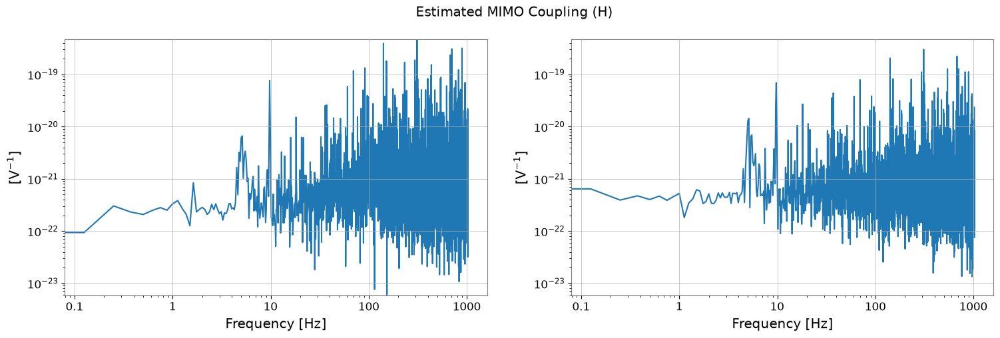
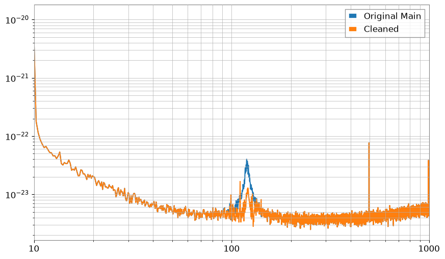

Note
このページは Jupyter Notebook から生成されました。 ノートブックをダウンロード (.ipynb)
[1]:
# Skipped in CI: Colab/bootstrap dependency install cell.
ウィーナーフィルタ: コヒーレント雑音の差し引き

複数の witness センサーが 同じ物理ノイズ源を重なって見ている とき、各 witness を独立に引くと二重差し引きが起きることがあります。
この notebook は legacy の MIMO 例を公開 docs 向けに整理し、多入力ウィーナーフィルタ行列の物理的意味に絞っています。
[2]:
import matplotlib.pyplot as plt
import numpy as np
from scipy import signal
from gwexpy import FrequencySeriesDict, TimeSeries, TimeSeriesDict
from gwexpy.noise.asd import from_pygwinc
from gwexpy.noise.wave import from_asd
fs = 2048.0
duration = 64.0
t = np.arange(0, duration, 1 / fs)
n = len(t)
np.random.seed(123)
rng = np.random.default_rng(123)
# Two independent physical sources are mixed into two witnesses with different weights, creating crosstalk between sensors.
b_low, a_low = signal.butter(2, 5.0, fs=fs, btype="low")
s1 = signal.lfilter(b_low, a_low, np.random.normal(0, 10.0, n))
b_band, a_band = signal.iirpeak(120.0, 30.0, fs=fs)
s2 = signal.lfilter(b_band, a_band, np.random.normal(0, 2.0, n)) + np.random.normal(0, 0.1, n)
aux1_val = 1.0 * s1 + 0.4 * s2 + np.random.normal(0, 0.05, n)
aux2_val = 0.6 * s1 + 1.0 * s2 + np.random.normal(0, 0.05, n)
asd_main = from_pygwinc("aLIGO", fmin=5.0, fmax=fs / 2, df=1.0 / duration, quantity="strain")
tsd = TimeSeriesDict()
tsd["MAIN"] = from_asd(asd_main, duration, fs, t0=0, rng=rng).highpass(5.0)
tsd["AUX1"] = TimeSeries(aux1_val, sample_rate=fs, unit="V")
tsd["AUX2"] = TimeSeries(aux2_val, sample_rate=fs, unit="V")
# Add witness-coupled noise into MAIN so subtraction has a coherent target to remove.
tsd["MAIN"] += tsd["AUX1"] / tsd["AUX1"].unit * tsd["MAIN"].unit * 2e-22
tsd["MAIN"] += tsd["AUX2"] / tsd["AUX2"].unit * tsd["MAIN"].unit * 5e-22
1. 相互相関行列を推定する
重要なのは witness 同士が独立ではないことです。Cxx が witness 間相関、Cyx が target と witness の相関を表します。
[3]:
aux_names = ["AUX1", "AUX2"]
aux_tsd = TimeSeriesDict({k: tsd[k] for k in aux_names})
# Window-averaged CSD matrices stabilize the statistics before we invert the witness correlation matrix.
cxx = aux_tsd.csd_matrix(fftlength=8.0)
cyx = TimeSeriesDict({"MAIN": tsd["MAIN"]}).csd_matrix(other=aux_tsd, fftlength=8.0)
# H = Cyx @ Cxx^-1 is the multichannel Wiener solution: it predicts the coherent part of MAIN from the witness set.
H_lowres = cyx @ cxx.inv()
H_lowres.abs().plot(xscale="log", yscale="log").suptitle("Estimated MIMO Coupling (H)")
plt.show()

2. 予測して差し引く
差し引くべきなのは witness で再構成できるコヒーレント成分だけであり、target 固有の不可避雑音は残るはずです。
[4]:
tsd_fft = tsd.fft()
H = H_lowres.interpolate(tsd_fft["MAIN"].frequencies)
X_mat = FrequencySeriesDict({k: tsd_fft[k] for k in aux_names}).to_matrix()
# Projection estimates the part of MAIN that can be reconstructed from the witnesses.
Y_proj = (H @ X_mat)[0, 0]
cleaned_ts = tsd["MAIN"] - Y_proj.ifft().bandpass(100, 130).real
asd_raw = tsd["MAIN"].asd(fftlength=4.0)
asd_cleaned = cleaned_ts.asd(fftlength=4.0)
plt.figure(figsize=(10, 6))
plt.loglog(asd_raw, label="Original Main")
plt.loglog(asd_cleaned, label="Cleaned")
plt.xlim(10, 1000)
plt.legend()
plt.grid(True, which="both")
plt.show()
